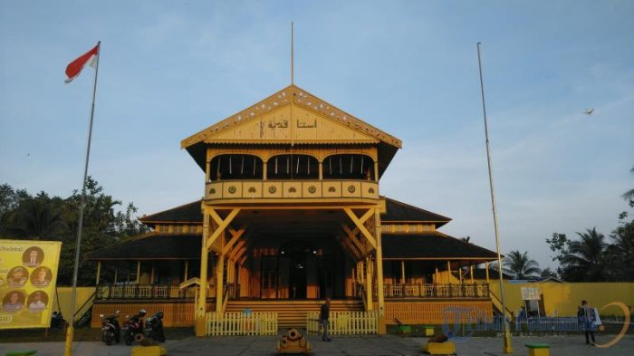
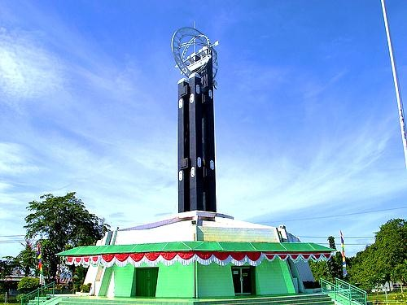
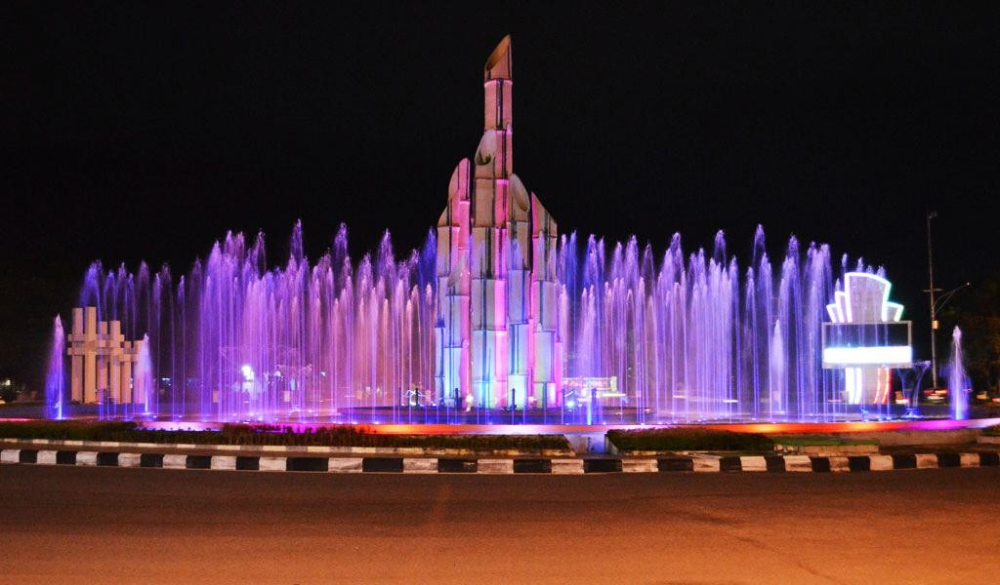

Sejarah Pontianak
Pada tanggal 24 Rajab 1181 Hijriah yang bertepatan pada tanggal 23 Oktober 1771 Masehi, rombongan Syarif Abdurrahman Alkadrie membuka hutan di persimpangan tiga Sungai Landak Sungai Kapuas Kecil dan Sungai Kapuas untuk mendirikan balai dan rumah sebagai tempat tinggal dan tempat tersebut diberi nama Pontianak. Berkat kepemimpinan Syarif Abdurrahman Alkadrie, Kota Pontianak berkembang menjadi kota Perdagangan dan Pelabuhan. Tahun 1192 Hijriah, Syarif Abdurrahman Alkadrie dinobatkan sebagai Sultan Pontianak Pertama. Letak pusat pemerintahan ditandai dengan berdirinya Mesjid Raya Sultan Abdurrahman Alkadrie dan Istana Kadariah, yang sekarang terletak di Kelurahan Dalam Bugis Kecamatan Pontianak Timur.
Menurut cerita yang beredar, nama Pontianak sendiri bermula dari kisah Syarif Abdurrahman yang sering diganggu oleh sosok makhluk halus berwujud kuntilanak saat menyusuri sungai. Nama Pontianak sendiri memang berasal dari bahasa melayu yang artinya kuntilanak. Syarif Abdurrahman yang merasa terganggu dengan ulah kuntilanak, melepaskan tembakan meriam untuk mengusir hantu yang digambarkan berwujud sesosok perempuan berbaju putih dan berambut panjang ini.
Tugu Khatulistiwa
Kota Pontianak identik dengan khatulistiwa. Kota ini menjadi salah satu kota yang dilalui garis khatulistiwa, garis lintang nol derajat atau biasa disebut sebagai equator. Di kota inilah dibangun sebuah menara yang diberi nama Tugu Khatulistiwa, sebuah menara yang di bangun oleh tim ekspedisi geografi yang dipimpin seorang ahli geografi berkebangsaan Belanda.
Tugu Khatulistiwa terletak di Jalan Khatulistiwa, Kecamatan Pontianak Utara, Kalimantan Barat. Menuju tugu ini dapat ditempuh sekitar 30 menit dari pusat Kota Pontianak. Tugu ini dibangun pada tahun 1928 dengan menggunakan ilmu astronomi. Pengukuran yang dilakukan oleh para ahli geografi saat itu tanpa menggunakan alat-alat yang canggih seperti satelit maupun GPS. Para ahli ini hanya berpatokan pada garis yang tidak smooth (garis yang tidak rata atau bergelombang) dan berpatokan pada benda-benda alam seperti rasi bintang.
Monumen Sebelas Digulis
Monumen Sebelas Digulis Kalimantan Barat, disebut juga sebagai Tugu Digulis atau Tugu Bambu Runcing atau Tugu Bundaran Untan oleh warga setempat, merupakan sebuah monumen yang terletak di Bundaran Universitas Tanjungpura, Jalan Jend. Ahmad Yani, Kelurahan Bansir Laut, Kecamatan Pontianak Tenggara, Kota Pontianak.
Monumen yang diresmikan oleh Gubernur Kalimantan Barat H. Soedjiman pada 10 November 1987 ini pada awalnya berbentuk sebelas tonggak menyerupai bambu runcing yang berwarna kuning polos. Pada tahun 1995, monumen ini dicat ulang dengan warna merah-putih. Penggunaan warna merah-putih ini menjadikan sebagian warga menganggap monumen ini lebih mirip lipstik daripada bambu runcing. Kemudian, pada tahun 2006 dilakukan renovasi pada monumen ini sehingga berbentuk lebih mirip bambu runcing seperti penampakan saat ini.
Monumen ini didirikan sebagai peringatan atas perjuangan sebelas tokoh Sarekat Islam di Kalimantan Barat, yang dibuang ke Boven Digoel, Irian Barat karena khawatir pergerakan mereka akan memicu pemberontakan terhadap pemerintah Hindia Belanda di Kalimantan. Tiga dari sebelas tokoh tersebut meninggal pada saat pembuangan di Boven Digoel dan lima di antaranya wafat dalam Peristiwa Mandor.